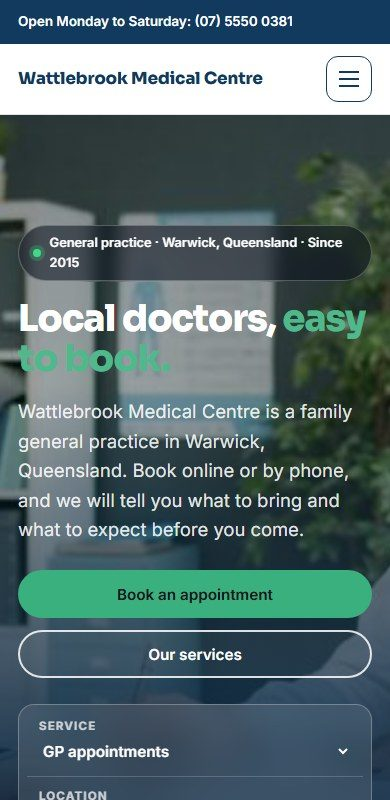

Medical centre website
Wattlebrook Medical Centre is a made-up business. We built this site to show what we do. It is not a real business or a client's site.
The facts.
- Business
- Wattlebrook Medical Centre (fictional)
- Industry
- Health and care
- Layout
- Big photo, light
- Pages
- 4
- Colours
- #12395e#3bb07f
- Works offline
- Yes
- Built from
- Our design system, tailored to the business
The home page, on two screens.


The problem.
New patients choose a clinic on their phone, in minutes.
They want to know how to book, what it costs and who they will see.
If that is hard to find, they book somewhere else.
What we built.
Tap each one to see why it matters and how we build it.
Book onlineA booking button on every page, linked to your booking system.
Why it matters
A booking button on every page, linked to your booking system.
How we build it
A booking button in the top bar of every page, linked to the booking system you already use.
New patient informationWhat to bring, fees, health funds and parking, in one place.
Why it matters
What to bring, fees, health funds and parking, in one place.
How we build it
One page with what to bring, fees, health funds, parking and access.
Meet the teamPractitioners with photos and what they treat.
Why it matters
Practitioners with photos and what they treat.
How we build it
A Team page with a photo of each practitioner and what they treat.
After-hoursEmergency and after-hours details that are easy to find.
Why it matters
Emergency and after-hours details that are easy to find.
How we build it
After-hours details in the footer of every page and on the Contact page.
Ready to see your three designs?
The brief takes about ten minutes.